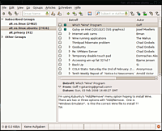

Pan
Dieser Artikel wurde für die folgenden Ubuntu-Versionen getestet:
Ubuntu 14.04 Trusty Tahr
Zum Verständnis dieses Artikels sind folgende Seiten hilfreich:
Pan  ist ein desktopunabhängiger Newsreader für das Usenet, der auf GTK basiert und äußerst einfach zu bedienen ist.
ist ein desktopunabhängiger Newsreader für das Usenet, der auf GTK basiert und äußerst einfach zu bedienen ist.
Früher stand Pan für "phat-ass-newsreader", wovon sich die Entwickler heute aber distanzieren. Pan kann sowohl mit normalen Text-Nachrichten wie auch mit Binaries umgehen. Er unterstützt das Offline-Lesen von Nachrichten, NZB sowie yEnc und bietet Multiserver-Support.
Auch manche E-Mail-Programme wie z.B. Thunderbird oder Claws Mail können mit Newsgroups umgehen, bieten aber nicht den Komfort von Pan.
Installation¶
Pan kann direkt aus den offiziellen Paketquellen installiert [1] werden:
pan (universe)
 mit apturl
mit apturl
Paketliste zum Kopieren:
sudo apt-get install pan
sudo aptitude install pan
Benutzung¶
Das Programm kann mit dem Befehl pan direkt gestartet werden [2]. Bei Ubuntu-Varianten mit einem Anwendungsmenü gibt es den Eintrag "Internet -> Pan Newsreader".
Beiträge lesen¶
 Nach dem ersten Start wird man zuerst nach den Daten eines News-Servers gefragt: Adresse, Port (normalerweise 119) sowie Benutzername und Passwort, falls erforderlich. Wenn man die Daten eingegeben hat, wird Pan direkt versuchen, sämtliche Gruppen, die der Server bereitstellt, zu indizieren. Man kann über "Edit -> Edit Newsservers" die Daten eines News-Servers nachträglich ändern oder aber einen weiteren News-Server hinzufügen.
Im Hauptfenster gibt es in der linken Spalte zwei Überschriften: "Subscribed Groups" und "Other Groups". Zuerst stehen sämtliche Gruppen, die der Newsserver bereit hält, unter "Other Groups". Man kann diese nun durchgehen oder via Suchmaske (oben) durchsuchen. Nach einen Links-Klick  auf eine Newsgroup wird man gefragt, ob die Header (welche nur die Titel bzw. den Betreff der Beiträge enthalten) der Gruppe heruntergeladen werden sollen. Diese erscheinen dann im rechten oberen Fenster. Mit einem weiteren Links-Klick auf eine Nachricht lädt Pan deren Inhalt herunter und man kann sie im rechten unteren Fenster lesen.
auf eine Newsgroup wird man gefragt, ob die Header (welche nur die Titel bzw. den Betreff der Beiträge enthalten) der Gruppe heruntergeladen werden sollen. Diese erscheinen dann im rechten oberen Fenster. Mit einem weiteren Links-Klick auf eine Nachricht lädt Pan deren Inhalt herunter und man kann sie im rechten unteren Fenster lesen.
Will man eine Newsgroup abonnieren, sind ein Rechts-Klick  auf die entsprechende Gruppe und die anschließende Auswahl von "Suscribe" erforderlich. Diese Gruppe erscheint dann unter der Überschrift "Suscribed Groups" und wird in regelmäßigen Abständen auf neue Nachrichten überprüft.
auf die entsprechende Gruppe und die anschließende Auswahl von "Suscribe" erforderlich. Diese Gruppe erscheint dann unter der Überschrift "Suscribed Groups" und wird in regelmäßigen Abständen auf neue Nachrichten überprüft.
Beiträge schreiben¶
Um einen Beitrag schreiben zu können, muss zuerst ein Posting-Profil erstellt werden. Dazu geht man unter "Edit -> Edit Posting Profiles -> Hinzufügen". Hier gibt man folgendes ein:
den Namen des Profils
einen Nicknamen, der in einem Usenet-Post erscheinen soll
die eigene E-Mail-Adresse
den Newsserver, über den die Nachrichten geschickt werden sollen
Jetzt kann man entweder eine neue Nachricht in eine Newsgroup schreiben oder über den Button "Followup to newsgroup" auf eine Nachricht antworten. Man kann prinzipiell nur dann in eine Newsgroup schreiben, wenn der Server diese auch bereitstellt und der Schreibzugriff erlaubt ist.
Score-File¶
Bei der Fülle an Posts in manchen Gruppen verliert man schnell den Überblick. Man findet seine Lieblingseinträge schlecht und auch trollt sich hier so manches Ungeziefer herum. Hier schafft das sogenannte Score-File Abhilfe.
Pan liest dafür beim Start, falls vorhanden, die Datei ~/.pan2/Score ein. Pan bedient sich beim Aufbau der Datei beim Schema von srln . Es ist möglich, wenn auch eingeschränkt, diese über die GUI zu pflegen, entweder über die Menüleiste "Articles -> Add Scoring Rule" oder schneller per Tastendruck
S .
Mehr Möglichkeiten bietet ein manuelles Editieren der Datei im Texteditor der Wahl. Möchte man z.B. alle Posts von Google-Groups bannen, da über diesen Kanal sehr viel Spam übermittelt wird, so trägt man folgendes ein:
[*] Score:: =-9999 Organization: http://groups.google.com Message-ID: .*googlegroups.com
 Programmübersicht
Programmübersicht- Erstellt mit Inyoka
-
 2004 – 2017 ubuntuusers.de • Einige Rechte vorbehalten
2004 – 2017 ubuntuusers.de • Einige Rechte vorbehalten
Lizenz • Kontakt • Datenschutz • Impressum • Serverstatus -
Serverhousing gespendet von